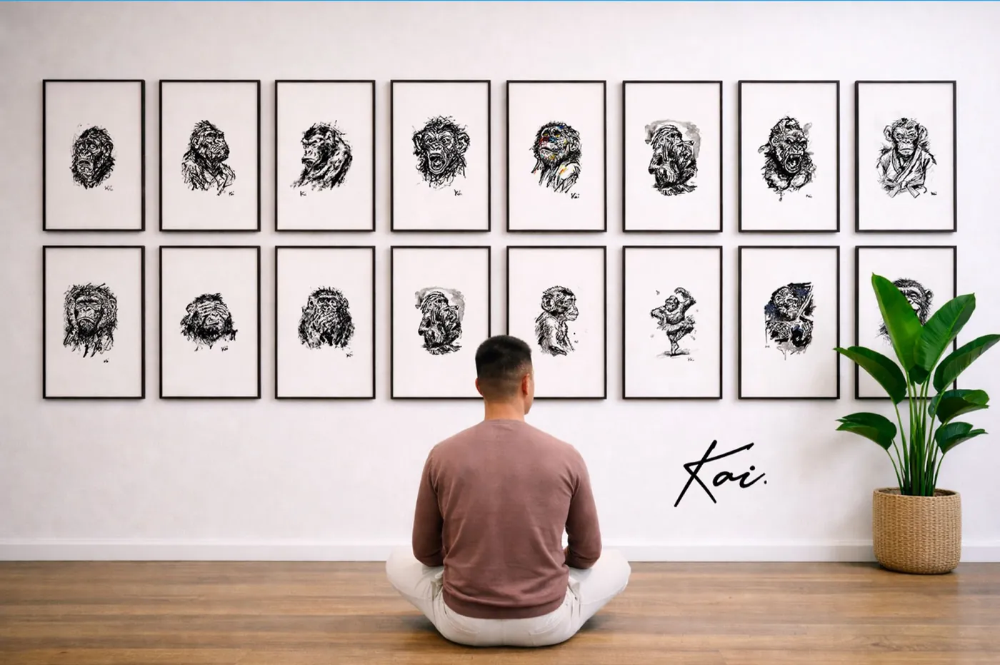
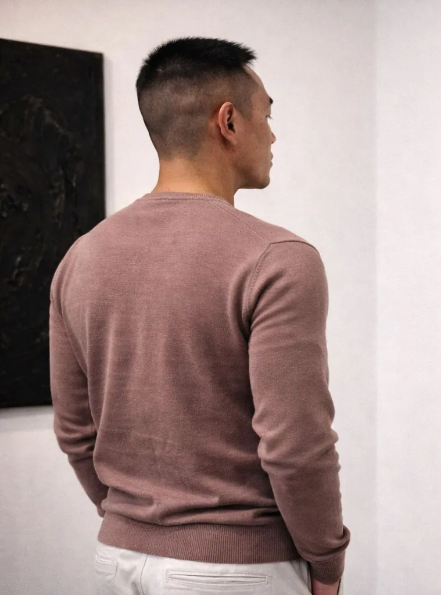

Collection II — À venir
Humain

Origine des visages
Chaque visage de la collection Humain est issu d'une mission humanitaire. Les regards sont portés, les traits vus. L'encre ne s'invente pas — elle se rapporte.
Après le primate, l'homme. La nouvelle série Humain — premiers regards.

Atelier · Paris 2025
Chaque visage de la collection Humain est issu d'une mission humanitaire. Les regards sont portés, les traits vus. L'encre ne s'invente pas — elle se rapporte.

Né au Vietnam, orphelin, arrivé en France en bas âge. Élevé par plusieurs familles aux traditions plurielles — ivoirienne, musulmane, bouddhiste, chrétienne — Kai Krill a forgé sa vision à l'intersection de toutes les humanités.
Le primate ne ment pas. Son regard porte ce que l'homme cherche à dissimuler.
Diplômé de l'École Boulle (MANAA) et titulaire d'un Bachelor of Arts de Middlesex University, il exerce d'abord comme Directeur Créatif chez Publicis, avant de créer ses propres sociétés — qu'il revend pour se consacrer entièrement à l'art et à l'action humanitaire.
L'art revient dans sa vie par un défi : dessiner un singe à l'encre de Chine par jour, pendant 30 jours, à la demande de son fils. De ce geste naît une œuvre. De cette œuvre, une mission.
Kai Krill reverse 70 % de l'intégralité des fonds générés à l'AIDE Fédération, ONG dotée du statut consultatif auprès des Nations Unies. Chaque œuvre acquise finance directement des projets humanitaires concrets, sur le terrain.
L'esthétique et l'activisme ne s'opposent pas — ils se nourrissent l'un l'autre. Posséder une œuvre de Kai Krill, c'est participer à une action dans le monde réel.
Pour toute demande d'acquisition, proposition d'exposition ou partenariat galerie.